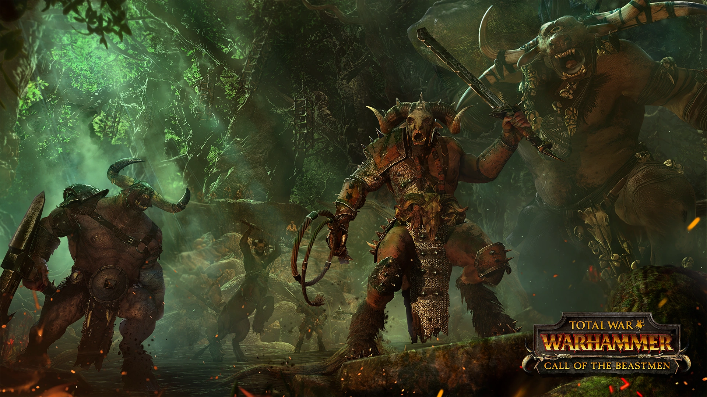

Bestie
Beastmeni jsou zmutovaná stvoření Chaosu, zčásti lidé a zčásti šelmy. Jsou primární a plní zuřivosti a potulují se po lesích a divočině. Beastmeni pohrdají veškerou civilizací, ale zvláštní nenávist chovají k lidem a lesním elfům, které považují za uzurpátory. Síly bestiářů se skládají především z rychle se pohybující pěchoty pro boj zblízka a také z větších nestvůr. Trpí nízkou vůdčí schopností a slabou zbrojí, ale lze je rekrutovat ve velkých počtech a jsou úderní.
